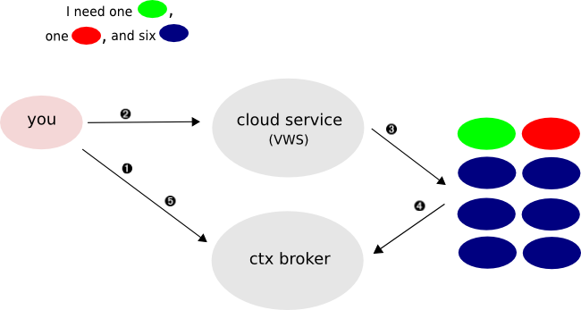

Quickstart and conceptual overview for launching one-click, auto-configuring clusters.
If you are already running on one of the science clouds, you could launch and use a cluster right this minute. Or you could run your own cloud (the software is free and open source).
|
Cluster Quickstart: |
Cluster Guide: (you are here) |
A lightweight agent on each VM -- its only dependencies are Python and the ubiquitous curl program -- securely contacts the context broker using a secret key. This key was created on the fly and seeded inside the instance. This agent gets information concerning the cluster from the context broker and then causes last minute changes inside the image to adapt to the environment. This is called contextualization.
You, as client, specify the types of nodes you want using a simple role-based annotation. You specify the source image of each type as well as how many instances should be launched.
Let's say you have a head node, file server and a pool of homogenous compute nodes. The head node needs to know what nodes to send work to for computing, the slave nodes need to know what its head node and file server contacts are, etc.
To adapt to new network identities as well as new cryptographic identities, configuration files and access policies need to be adjusted. You may also want to pass different data files in on different launches: in the example (see quickstart), an access policy for external usage was installed (grid-mapfile).
Sorting this out on the fly (and securely) is the responsibility of the context agent on each VM. The context agent takes all the generic security and message handling steps out of the equation for you as the cluster builder. You're left with just the task of taking the information you need (identities, new data files, etc) and turning that into the configuration change that will make your software work.
The numbered steps below correspond to the numbers in the diagram.
You make a cloud-client request. Instead of using "--name" to specify the image to use, you use "--cluster" and specify a cluster definition file. This is a simple XML file that defines the layout you want (we'll look at this later).
The client notices you want contextualization and creates a new context for you from the context broker. The broker provides the information that each instance needs to talk to the context broker: a security credential and the broker contact information.

The client contacts the cloud service with your request, securely passing along the broker contact and security information.
The cloud service launches the instances you asked for, seeding each image with the security credential and the broker contact information. You can launch different images at once, for example two "abc" instances plus three "xyz" instances etc. You can also make a whole cluster launch from a single image file -- each instance can take on a different personality after it boots, guided by what you request in the cluster definition file. That is how the base-cluster sample works (see quickstart).
Inside the VM is a lightweight program we will call the context agent. Its only dependencies are Python and the curl program, so it should be able to launch in all but the most stripped down VMs. This program interprets the bootstrap information (from step #2) and talks with the context broker over HTTPS.
We will go through the concepts of provided roles and required roles later in the cluster definition sections below, but the basic idea is that the broker tells the agent inside the VM all about the other nodes that it is "required" to know about. The agent turns around and looks for scripts to call that bear the role name(s) in question.

If you are making a cluster yourself, these scripts are what you need to look at and change around to get the right behavior at boot time. Because only particular scripts are called based on what the context broker tells the agent, this allows you to have one binary VM image that ends up being able to play multiple roles. If a script is present but is not invoked because of the way you launched that particular instance, then the configuration will just not happen.

Remote clients can query the context broker for information. One important thing they can retrieve is the SSHd public key generated by every cluster member. By default, as you saw above, the cloud-client will install these to the known_hosts file for you. This feature is only available when using contextualization (you can launch workspaces with "--cluster" flag and NOT use contextualization for some or all of them).
The cluster definition file drives the actual request that is made by the cloud-client in step #1 above. Here is an example that excludes the contextualization related element:
<cluster xmlns="http://www.globus.org/2008/06/workspace/metadata/logistics">
<workspace>
<name>head-node</name>
<image>my-head-node</image>
<quantity>1</quantity>
<nic wantlogin="true">public</nic>
</workspace>
<workspace>
<name>compute-nodes</name>
<image>my-compute-node</image>
<quantity>2</quantity>
<nic>public</nic>
</workspace>
</cluster>
Each <workspace> element is like a group (of one to N) identical requests that will only differ by the network identity each instance gets assigned. You can have unlimited <workspace> sections to make any arbitrary cluster layout.
<name> is for local console printing only. This is helpful for quickly ascertaining which IP address you're interested in. It's an optional element.
The <image> and <quantity> values direct the cloud client to launch one instance of the "my-head-node" image in your personal directory and two instances of the "my-compute-node" image. Note that you can launch instances from the same image file in different <workspace> groups if they differ in some other way (for example if they have differing contextualization needs).
<nic> elements dictate 1) how many network interfaces should be present, 2) what the network name for each one is, and 3) whether or not SSH known_hosts should be updated automatically.
Multiple nic situations are an advanced topic, but briefly: you can have many network situations but a common example would be NAT'd network setups for compute nodes. Also, the context broker accomodates multiple identities per node, you can specify which identity is needed for a particular service, etc.
The network names are specific to the cloud (you will often see the conventional "public" and "private"). You can query for the active ones by running ./bin/cloud-client.sh --networks
The wantlogin="true" attribute controls whether or not the SSH known_hosts file should be adjusted to include this node(s) SSHd public key. See here for more information. The attribute is optional, so it can just look like <nic>somenetwork</nic> if you want no SSH adjustment.
The <ctx> element, if needed, comes after the <nic> elements. The syntax of the <ctx> element is discussed in the next section. This is an optional element, you can launch clusters that don't contextualize or where only parts of it need contextualization.
You will need to run the context agent inside your VM. This is available here, we are going to dedicate a download/information page to this program in the future:
Dependencies:It would be very rare that your VM's package management system does not support these two things. And it's likely that they are already installed:
_EXAMPLE_GENERICCMD_BEGIN python -V _EXAMPLE_CMD_ENDIn the curl version (-V) output, make sure "https" is reported (it would be rare it was built without https support but does not hurt to check).
Untar the archive. Move it to live under "/opt/nimbus" (it can be placed elsewhere but you'll have to adjust the conf file to accomodate).
_EXAMPLE_GENERICCMD_BEGIN wget http://www.nimbusproject.org/downloads/nimbus-ctx-agent-2.2.1.tar.gz _EXAMPLE_CMD_END _EXAMPLE_GENERICCMD_BEGIN tar xzf nimbus-ctx-agent-2.2.1.tar.gz _EXAMPLE_CMD_END _EXAMPLE_GENERICCMD_BEGIN mkdir /opt/nimbus _EXAMPLE_CMD_END _EXAMPLE_GENERICCMD_BEGIN mv nimbus-ctx-agent-2.2.1/* /opt/nimbus/ _EXAMPLE_CMD_ENDThe ctx directory is where the agent implementation is, the main reason you'd ever need to go there would be to adjust the "ctx.conf" file. The default configurations will all be fine if you are untarring to "/opt/nimbus".
It is intended to be run as part of the VM's init system. It requires the network to work properly. We have seen that some Linux distributions do not bring up the network before calling rc.local tasks. In that case it is wise to put a while+sleep loop before launching the context-agent that will check to make sure the network is up.
The ctx-scripts directory is what you need to look at to make the auto-configurations work.
Sanity check by running:
_EXAMPLE_GENERICCMD_BEGIN /opt/nimbus/ctx/launch.sh _EXAMPLE_CMD_ENDYou'll see something like this message (among others):
metadata server URL path '/var/nimbus-metadata-server-url' does not exist on filesystem
That's OK. What this means is that the VM was not booted up as part of a context. The missing bootstrap file is expected in that case. Since the bootstrap information is needed to contact the broker, it's also expected that the agent cannot report errors to the broker.
This means you can run your image in standalone mode without nonsense. The context agent can still start via the init system and have no side effects. You can start your image, make an edit, save the image back to your repository directory and then launch with contextualization.
Under this ctx-scripts directory is where your role specific scripts will live. Say your system is going to run Torque. One node will be the PBS server and all the others will run the PBS mom daemon. A simple cluster, easy to picture.
You will pick an arbitrary name for each of the roles you want to call out, in our example we have two roles. In order to follow along with the actual Torque scripts that are provided as (working) samples, we will call the server node torquemaster and compute nodes torqueslave.
When the head node instance boots, the context agent runs and is told by the context broker that it requires "torqueslave" along with a list of identities that provide the "torqueslave" role.
A program exists called "torqueslave". For each torqueslave that this head node is hearing about, the script is called once by the context agent with the identity as arguments. It configures the PBS nodes file to enable that node as a valid member of the compute cluster.
The reverse happens on the compute nodes. Each node hears about the "torquemaster" they require and that script gets called to configure the PBS mom daemon.
After all the configurations are made, the appropriate service is started on each node based on what role it is playing.
That's the main idea. Every node can "require" and "provide" a role. The broker matches everything up in the context and provides the correct response to every context agent that is querying it. When an instance's agent hears about a certain role it requires, a script matching the role name is called in order to "consume" the required information:
There is a restart phase after those role specific scripts are called -- this phase gives you the opportunity to start up specific programs based on the roles the node is told it is playing.
Data delivery is handled in a similar way:
A script matching the data name is called. Only one argument is passed to it, an absolute path to a file with the data contents. You can consume that file in any way. This can be a powerful mechanism since you can provide data as the remote client. The "data" could even be a zero-length value that triggers some behavior merely by calling a particularly named data script.
The script directory has subdirectories with an integer prefix:
The integer prefix reminds you of the order that the directories are consulted. For example, the "1-ipandhost" scripts (the workhorse scripts that accept peer identity information) and "3-data" scripts are both called before the "4-restarts" scripts.
The ordering is for a reason: in this Torque example, you would not want to restart the PBS server process (via "4-restarts") until all of the required identities were inserted into the nodes list (via "1-ipandhost").
In general, by looking at the number prefix, you can remind yourself quickly that ALL runs of the X directory scripts are guaranteed to have been made before anything in the Y directory is called, when X < Y.
The programs in these script directories can be written in any programming language, they are invoked via normal process fork + arguments.
Log output goes to "/opt/nimbus/ctxlog.txt" by default.
Following our simple Torque example, let's revisit the cluster definition file and add in the contextualization requirements.
<cluster xmlns="http://www.globus.org/2008/06/workspace/metadata/logistics">
<workspace>
<name>head-node</name>
<image>my-head-node</image>
<quantity>1</quantity>
<nic wantlogin="true">public</nic>
<ctx>
<provides>
<identity />
<role>torquemaster</role>
</provides>
<requires>
<identity />
<role name="torqueslave" hostname="true" pubkey="true" />
</requires>
</ctx>
</workspace>
<workspace>
<name>compute-nodes</name>
<image>my-compute-node</image>
<quantity>2</quantity>
<nic>public</nic>
<ctx>
<provides>
<identity />
<role>torqueslave</role>
</provides>
<requires>
<identity />
<role name="torquemaster" hostname="true" pubkey="true" />
</requires>
</ctx>
</workspace>
</cluster>
Besides seeing examples of the provides and requires syntax, two extra things were introduced in this example:
The <identity /> tags. Keep these, they signal that each member requires all identities in the cluster. This is used for configuring each node's local /etc/hosts with every member in the context and it's very likely you will not want to disable this behavior.
The hostname and pubkey attributes. This signals that when a node is informed of this required role, it needs to have hostname and SSHd pubkey in the information, otherwise it will not be considered a complete answer. Responses to context agents concerning this role will be held off until the nodes in question report their SSHd public keys to the context broker.
Notice that providing contextualization requirements on a per launch basis allows you to use the same image file for different <workspace> sections. With these Torque roles, you could have the same image file with both sets of configuration scripts. When the VMs are booting and the context agent retrieves role information from the broker, only the appropriate scripts are called. That is how the base-cluster sample works (see quickstart).
This should be enough to get you going, be sure to look at the script samples for comments.
If you are not sure about what configuration strategy to take for a particular piece of software, one thing you might try is asking on the workspace-user@globus.org list for ideas since other cluster authors are lurking there (see the contact page for instruction on how to subscribe).
_NIMBUS_CENTER2_COLUMN_END _NIMBUS_FOOTER1 _NIMBUS_FOOTER2 _NIMBUS_FOOTER3